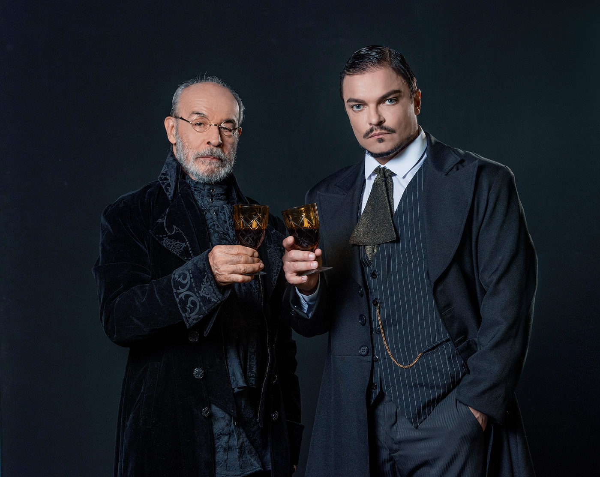

“O Veneno do Teatro” retorna aos palcos com Osmar Prado e Maurício Machado

Após dez anos de afastamento, Osmar Prado volta aos palcos ao lado de Maurício Machado em peça aclamada de Rodolf Sirera, no Teatro J. Safra.
Após uma década longe dos palcos, Osmar Prado faz seu aguardado retorno com a peça "O Veneno do Teatro", um clássico do renomado dramaturgo espanhol Rodolf Sirera. Ao lado do premiado ator Maurício Machado e sob a direção de Eduardo Figueiredo, a peça volta a São Paulo, agora no Teatro J. Safra, após uma temporada de sucesso em várias capitais brasileiras.
"O Veneno do Teatro" já foi encenado em mais de 62 países e é reconhecido pela crítica como uma obra de suspense envolvente e sofisticada. No Brasil, o espetáculo percorreu cidades como Brasília, Belém, Belo Horizonte, Goiânia e Rio de Janeiro, sempre com casas lotadas. Agora, os paulistanos têm a chance de conferir essa montagem que promete instigar e provocar o público.
Miguel Arcanjo, crítico e jurado da APCA, elogia a performance dos atores, destacando a química e o jogo psicológico que se desenvolve entre Osmar Prado e Maurício Machado. "Os dois atores criam um jogo sofisticado e surpreendente", afirma Arcanjo. Dirceu Alves Jr., jornalista e crítico de teatro, também enaltece a escolha da peça por Eduardo Figueiredo, destacando a profundidade dos personagens e a relevância das questões abordadas, como ética, poder e autoconhecimento.
A peça, escrita na década de 1970 após a ditadura de Franco na Espanha, se passa originalmente na França de 1784, mas a versão brasileira opta por uma ambientação atemporal inspirada na Paris dos anos 1920. O enredo gira em torno de um ator, Gabriel de Beaumont (interpretado por Maurício Machado), convidado por um excêntrico marquês (Osmar Prado) para interpretar uma peça teatral. O que começa como uma proposta artística se transforma em um jogo psicológico intenso, revelando a verdadeira natureza do marquês.
A direção musical é assinada por Guga Stroeter, com música ao vivo executada pelo violoncelista Matias Roque Fideles, enriquecendo ainda mais a atmosfera da peça. Kleber Montanheiro é responsável pelo cenário e figurinos, enquanto Paulo Denizot assina o desenho de luz, criando um ambiente visualmente impactante.
A temporada de "O Veneno do Teatro" fica em cartaz no Teatro J. Safra até o dia 7 de julho, com apresentações às quintas, sextas e sábados às 21h e aos domingos às 19h. Os ingressos variam de R$ 20 a R$ 140 e podem ser adquiridos online pelo site da Eventim. O teatro, localizado na Barra Funda, em São Paulo, oferece acessibilidade para deficientes físicos e conta com estacionamento próprio com serviço de valet.
Não perca a oportunidade de assistir a este espetáculo que combina suspense, reflexão e performances memoráveis, marcando o retorno triunfal de Osmar Prado aos palcos brasileiros.